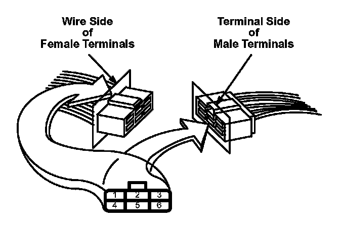
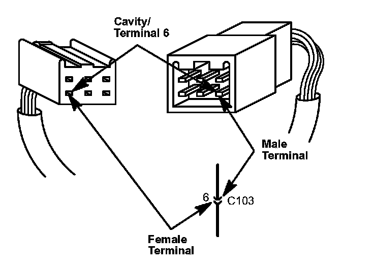

How to Identify Connector Terminals
How to Identify Connector TerminalsConnector terminals are numbered according to the cavities they're in. The cavities are numbered starting from the upper left, looking at the male terminals from the terminal side or looking at the female terminals from the wire side. Both views are in the same direction so the numbers are the same. All actual cavities are numbered, even if they have no wire terminals in them.

NOTE: Data Link Connector (DLC) terminals are numbered according to SAE standard J1962, not the Honda standard. The numbers of the four end terminals are molded into the corners of the connector face.

The connector cavity number is listed next to each terminal on the circuit schematic. The cavity/terminal shown is #6.